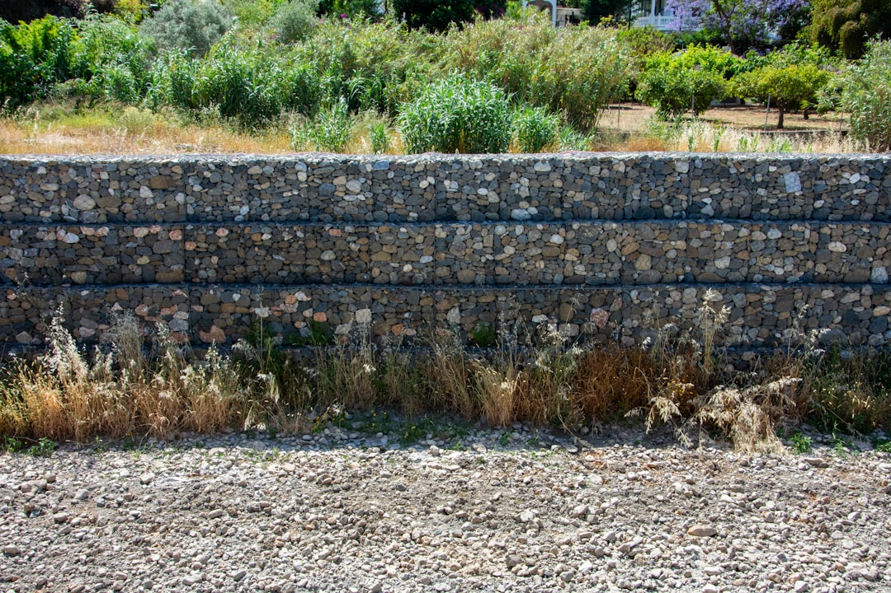

A useful retaining wall brief starts with measurable scope, not guesswork: wall length, average retained height, selected system, access, slope, drainage, removal and professional allowances. The source guide compares 7 wall systems, uses 8 jurisdiction pathways and shows 3 planning bands. Its calculator can include GST, drainage allowance and upper-band contingency, with professional and approval allowances shown as A$1,200 to A$3,500 or A$3,000 to A$8,000 for complex cases.
For owners comparing retaining wall quotes, the practical issue is how to turn a sloping, damaged or boundary-affected site into a brief that contractors can price consistently.
Retaining Wall Quotes Explained
Retaining Wall Quotes publishes a planning-first approach: define the wall face, material, access and approval questions before asking local providers to price the job. That order matters because a metre of low garden edging is not the same estimating problem as a retained boundary wall with drainage, removal and engineering questions.
The key measure is wall-face area, based on length and average retained height. The source calculator also asks about wall system, machine access, working slope, removal of an existing wall, drainage and professional or approval allowance. Those inputs give contractors a clearer starting point than a single photo or a rough metre count.
- Measure the wall length and the average retained height, not fence height above it.
- Describe whether the work is new, replacement, repair or assessment only.
- Record whether access is good, limited or difficult.
- Note slope, drainage concerns and whether an old wall must be removed.
What Changes The Price Conversation
The published cost method separates the visible wall from the conditions around it. Material choice is only one variable. Access can change labour and equipment planning, slope can affect buildability, and drainage can alter both design and quote inclusions. A useful quote should make those assumptions visible instead of hiding them in a single total.
Professional and approval allowances also need early attention. The source calculator lets a planner exclude that allowance, include A$1,200 to A$3,500, or select a complex allowance of A$3,000 to A$8,000. Those are planning inputs, not a contractor price or structural assessment, but they help stop engineering and approval questions being treated as afterthoughts.
For owners in Brisbane, the related Brisbane retaining wall quote guide narrows the same planning logic to a city page. For a national brief, the safer habit is to start with state or territory requirements, then confirm property-specific approval, engineering, drainage and boundary questions.
Material Choice Is A Site-Fit Decision
The source guide compares concrete sleeper, cast-in-situ concrete, timber, block and brick, stone and sandstone, gabion, and rock or boulder systems. It frames material selection as a site-fit decision, not appearance alone. That is the right lens for quoting because different systems raise different questions about access, skilled labour, base preparation, drainage, finish and replacement planning.
Concrete sleeper work is described as a post-and-panel system, while cast-in-situ concrete brings formwork, reinforcement, placement and finish into the discussion. Timber needs treatment, durability and replacement planning. Block or brick work needs attention to masonry systems, base and reinforcement. Stone, sandstone, gabion, rock and boulder options can bring heavier emphasis on material selection, footprint, machine access, placement and drainage.
When comparing options, ask each contractor to explain why the proposed system fits the retained height, soil, access and boundary setting. A cheaper material allowance is not useful if it leaves out drainage, removal, engineering or site constraints that another quote has included.
Who This Applies To
This guide is most relevant for property owners who already know they need a retaining wall conversation but are not ready to choose a contractor from price alone. It suits new wall planning, replacement of an existing wall, repair assessment, and early-stage planning where the owner wants to understand the variables before lodging an enquiry.
It is less useful for someone seeking an emergency instruction, a structural sign-off or a fixed price without site inspection. The source material is clear that its calculator is planning information only, not a quote or structural assessment. Soil, loads, drainage, access, design, approvals and scope can materially change the result.
- New wall: prepare length, retained height, system preference, access and slope notes.
- Replacement: include removal, drainage and visible condition details.
- Repair or assessment: describe warning signs and whether photos are ready for follow-up.
- Planning only: use the estimate as a briefing tool, not as a final budget.
Questions To Ask Before Accepting A Quote
A clear quote should state what is included, what is excluded and what assumptions could change the final scope. Ask whether drainage is included, whether removal of an existing wall is included, whether engineering or approval costs are allowed for, and whether the price assumes machine access or hand access.
Boundary and neighbour issues should be raised before work is booked. The source navigation points to dedicated approval, engineering, boundary wall and neighbour topics, which signals that these matters can affect the planning path. The practical step is to ask the contractor which approvals or professional inputs they believe are needed for the specific property, then verify the pathway with the relevant local authority where required.
ASIC Moneysmart treats renovating as a budgeting exercise that should be planned carefully before money is committed. Housing Industry Association and Master Builders Australia are also relevant industry sources for homeowners wanting broader context on residential building and renovation decisions.
- Measure the retained wall face. Record the wall length and average retained height before discussing price.
- Choose or shortlist the wall system. Compare concrete sleeper, poured concrete, timber, block, stone, gabion, rock and boulder options against the site.
- Document access and slope. Tell contractors whether machine access is good, limited, difficult or likely to require hand work.
- Flag approvals early. Ask which engineering, approval, boundary and neighbour questions apply to the specific property.
- Compare inclusions line by line. Check drainage, removal, professional allowance and contingency assumptions before treating quotes as comparable.
| Input | Why it matters | What to prepare |
|---|---|---|
| Wall-face area | Length and retained height drive the base estimating method | Measured length and average retained height |
| Wall system | Different systems involve different labour, access and drainage assumptions | Preferred material or an open brief |
| Access and slope | Equipment and working conditions can change the job setup | Photos, side access notes and slope description |
| Professional allowance | Engineering and approval questions may need a separate planning allowance | Ask whether no allowance, standard allowance or complex allowance fits |
| Removal and drainage | Existing walls and water management can change scope | Condition notes, drainage concerns and whether removal is needed |
Common questions
Is the calculator result a retaining wall quote? No. The source describes the calculator output as planning information only, not a quote or structural assessment. Site conditions, loads, drainage, access, design, approvals and scope can materially change the result.
Which wall materials are compared? The source compares 7 systems: concrete sleeper, cast-in-situ concrete, timber, block and brick, stone and sandstone, gabion, and rock or boulder.
What information should I send with an enquiry? Send the project type, suburb or postcode, preferred material if known, wall length, average retained height, access notes, slope notes and whether site photos are ready for follow-up.
When should approval or engineering be discussed? Discuss it before accepting a price. The source separates engineering, approvals, boundary walls and neighbours into planning topics, so those questions should be checked for the specific property rather than assumed.
This guide covers retaining wall planning inputs, quote comparison questions, material choices and approval prompts for Australian property owners.